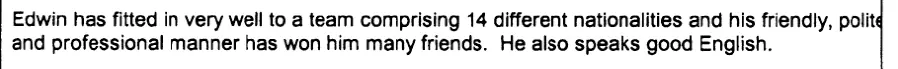
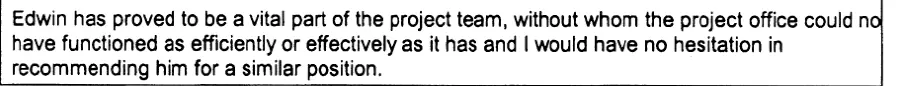

Beweisstück · Beurteilung
Beurteilung Giltays durch Deloitte, 6. April 2000
Umgang mit Kollegen
„Edwin hat sich sehr gut in ein Team aus 14 verschiedenen Nationalitäten eingefügt, und seine freundliche, höfliche und professionelle Art hat ihm viele Freunde eingebracht. Er spricht auch gut Englisch.“ Seite 1, der Absatz über dem Schlussabsatz. Der Scan schneidet den rechten Rand des Rahmens ab, sodass der letzte Buchstabe von „polite“ am Ende der ersten Zeile fehlt; das Wort steht hier vollständig. Aus dem Englischen übersetzt; der Originaltext steht unten.
“Edwin has fitted in very well to a team comprising 14 different nationalities and his friendly, polite and professional manner has won him many friends. He also speaks good English.” Originaltext

Die Empfehlung
„Edwin hat sich als unverzichtbarer Teil des Projektteams erwiesen, ohne den das Projektbüro nicht so effizient oder effektiv hätte arbeiten können, wie es gearbeitet hat, und ich würde ihn ohne Zögern für eine vergleichbare Position empfehlen.“ Seite 1, der Schlussabsatz des Formulars. Der Scan schneidet den rechten Rand des Rahmens ab, sodass der letzte Buchstabe von „not“ am Ende der ersten Zeile fehlt; das Wort steht hier vollständig. Aus dem Englischen übersetzt; der Originaltext steht unten.
“Edwin has proved to be a vital part of the project team, without whom the project office could not have functioned as efficiently or effectively as it has and I would have no hesitation in recommending him for a similar position.” Originaltext

Warum dieses Dokument wichtig ist
In diesem Beurteilungsformular vom 6. April 2000 schreibt Giltays Manager bei Deloitte Consulting, er würde ihn ohne jedes Zögern für eine vergleichbare Position empfehlen. Der Essay nennt berufliche Empfehlungen von multinationalen Konzernen, darunter IBM und Deloitte, als Teil der erheblichen Gegenbeweise gegen die Charakterisierung Giltays, die der Verteidigungsminister 1999 festhielt und nie zurückzog. Diese Charakterisierung ist nach wie vor im öffentlichen Bericht des Nationalen Ombudsmanns online nachzulesen.
Der Manager schreibt außerdem, die Arbeit sei stets von höchster Qualität gewesen und termingerecht geliefert worden, und Giltay habe sich gut in ein Team aus vierzehn Nationalitäten eingefügt und sich mit seiner freundlichen, höflichen und professionellen Art viele Freunde gemacht. Das Formular entstand ein Jahr, nachdem die Charakterisierung schwarz auf weiß festgehalten worden war.
Herkunft
- Dokument
- Feedback Form, eine Seite
- Ausgestellt von
- Deloitte & Touche Consulting Group
- Beurteiler
- Charles Vivian, Deloitte Consulting
- Beurteilte Person
- Edwin Giltay
- Datum
- Handschriftlich neben der Unterschrift als 06/04/00, hier gelesen als 6. April 2000
- Betreff
- Beurteilung von Giltays Arbeit in einem Projektbüro zur Unterstützung eines Beratungsauftrags mit siebzig Consultants
- Genannte Aufgaben
- Hotelunterbringung für das Team von siebzig Consultants, Entwicklung und Verwaltung einer Website des Projektbüros, Erfassung von Zeitdaten, Unterstützung bei der Organisation externer Treffen, Aufbau und Verwaltung von Dokumentationsbibliotheken
- Geschwärzt
- Die Unterschrift ist im Scan geschwärzt; der handschriftliche Name Charles Vivian und die Zeile Deloitte Consulting darunter wurden lesbar gelassen
- Sprache
- Englisch
- Seiten
- 1
- Aufbewahrt bei
- Archiv des Autors
- Siehe auch
- Empfehlungsschreiben von IBM Nederland, 18. Oktober 1994Bericht 1999/507 des Nationalen Ombudsmanns, 17. Dezember 1999
Zitiert in: dem Essay „Das Verbot fiel, das Buch hielt stand“ im Kapitel (3) „Was das Buch enthüllt: die Srebrenica-Vertuschung“.
Beweiskarte: https://
Dokument: https://
Zuletzt geändert am 13. September 2026, abgerufen am 3. Oktober 2026.

Diese Seite ist ein Beweisstück zum Buch Der Cover-up-General von Edwin Giltay und zur dazugehörigen Website.